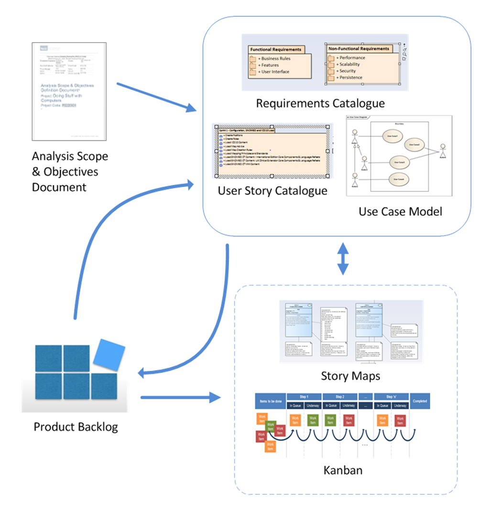
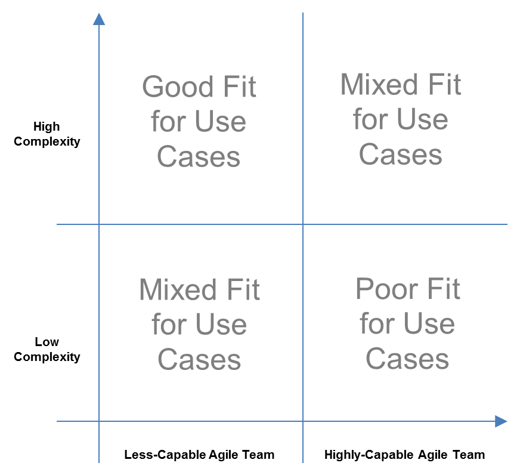

In an Agile project care should be taken to follow Agile principles and agreement is needed on the key artefacts that are
needed for inclusion in the Product Backlog as well as planning the development Sprints.
The business analysis needs to consider the relationship between the Product Backlog and how it is to be managed; then what
analysis artefact to produce.
functional requirements and use cases
functional requirements and use cases
An agile approach for using Use Cases and User Stories
Functional requirements can be used to define formally the system capabilities.
User Stories provide an informal approach to functional requirements. Where the product owner is easily accessible they are
a simple and effective approach. They are intended to promote discussion between the product owner and development team.
Use Cases can be used to define functional requirements in more detail following a systematic approach. Along with the use
case diagram they can provide a visual representation of functional requirements. This can includes the actors and system
boundaries to provide an architectural overview of the functional requirements.
Differences between User Stories and Use Cases
User Stories:
|
• |
Describe needs, usually what the user needs to do in their day-to-day job.
|
|
• |
Usually have an informal style, use language familiar to Users and are brief; this makes User Stories easy for Users to read.
|
|
• |
Provide an entry and frame of reference (for a Product Owner) to articulate required detail.
|
|
• |
Should be independent and constrained in size.
|
Use Cases:
|
• |
Describe behaviour to be provided by a system including interactions with users and other systems.
|
|
• |
Are formal / structured, possibly lengthy and include concepts which are less obvious to users; this makes Use Cases more
difficult for Users to read and fully understand.
|
|
• |
Provide a definition of what should be built.
|
When should User Stories and/or Use Cases be Generated?
User Stories and Use Cases are not interchangeable and their use should be determined by:
Approach:
|
• |
User Stories are a natural fit with Agile; Use Cases may fit less naturally but may be required depending upon other factors
(see following factors).
|
Who is the author:
|
• |
Not all authors are capable of generating Use Cases (though this is standard for BAs).
|
The level of detail needed:
|
• |
This may be a determined by complexity and risk, with the principle of Agile being that only sufficient detail is needed and
exceeding this is wasteful. Equally important are the capabilities (and preferences) of the wider team, with less capable
teams usually requiring more detail. As the requirement for detail increases the suitability of Use Cases increases.
|
effective use of use cases
effective use of use cases
Describes where Use Cases may be an effective part of an Agile project
Use Cases are less frequently used than User Stories in Agile delivery, but Use Cases still offer value to Agile, not as a
replacement for User Stories but as a way to expand on them once they are identified for iteration in areas which are complex
or the wider team is less capable.
Two ways of reconciling User Stories with Use Cases (no one-size-fits-all):
|
1. |
Iterate User Stories into Use Cases?
|
• |
User Stories fit naturally with Agile and provide a very good start point. In most cases a well-developed User Story is sufficient
for an Agile-capable team and there is no need to iterate any further. However, where the complexity requires more detail
it is entirely reasonable for a User Story to be iterated into a Use Case. In this approach, it is important to use the principle
'stop when you can' - elaborating Use Cases (or User Stories) when not needed is wasteful and conflicts with the Agile approach.
|
|
|
2. |
Iterate details within Use Cases?
|
• |
If User Stories are not to be used for (part of) an Agile delivery, then care must be taken to ensure that the creation of
Use Cases follows Agile principles.
|
|
• |
For Agile, a first iteration of a Use Case should simply identify Actors, Goals, Descriptions. This can be iterated as is
normal for Agile and where complexity requires more detail the use case can be incremented to include additional Use Case
content (such as steps, errors, states etc.).
|
In each approach, it is important to use the principle 'stop when you can' - elaborating Use Cases when not needed is wasteful
and conflicts with the Agile approach.
|